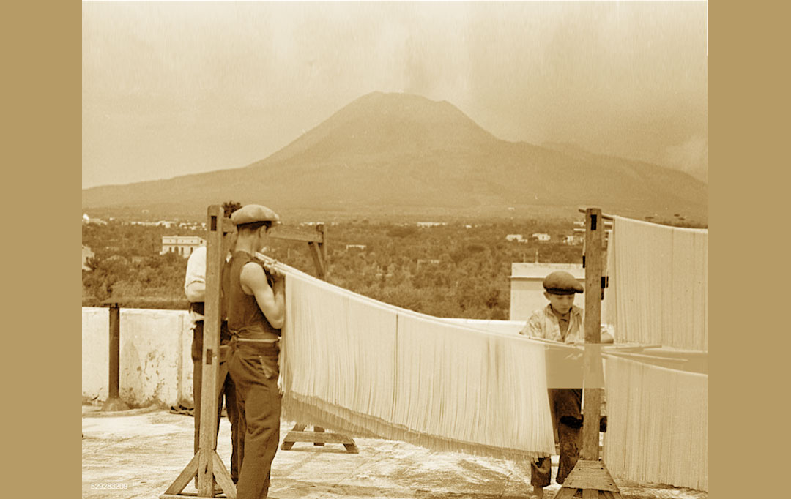
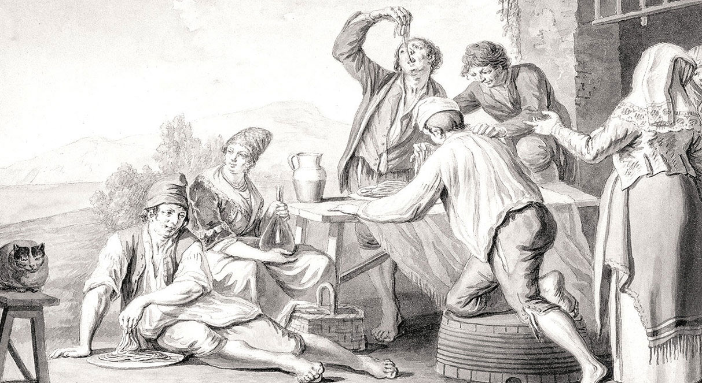
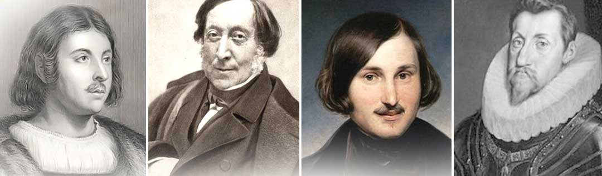
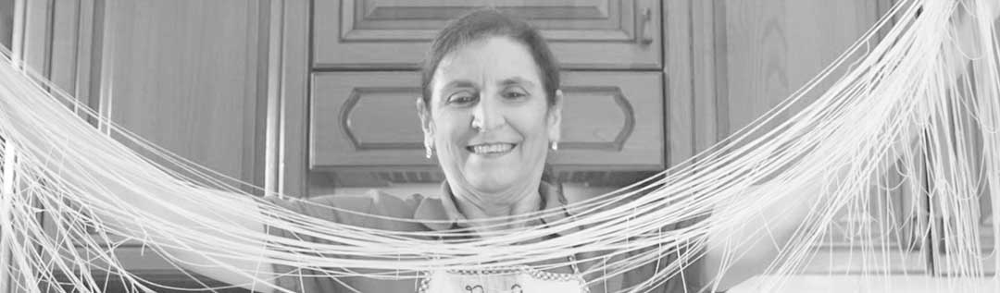

Все про пасту

Точної відповіді на питання, хто ж був винахідником пасти, й досі немає. Серед претендентів на першість називають китайців, арабів і, звичайно, італійців. За однією з версій, паста була відома в Китаї за 5 тисяч років до нашої ери. Араби почали варити пасту ще в 5 столітті до н.е. Є також документальне підтвердження, що древні римляни готували тісто з води та муки, смажили його, різали на смужки та їли з соусом.
Достовірно відомо, що у 1292 році Марко Поло привіз з Китаю до Італії щось схоже на тальятеле. Проте історики стверджують, що до цього часу паста в Італії вже була відома та досить поширена. На одній з етруських могил були знайдені зображення інструментів для виробництва пасти: дошка для розкачування тіста, качалка, колесо для різання пасти – ті інструменти, які використовуються для приготування пасти й досі.

Відомо, що на Сицилії уже у XII столітті вживали в їжу довгу та тонку пасту, схожу на сучасні спагеті. У цей же час в Калабрії навчилися закручувати пасту в трубочки. Кулінарна книга XIII століття, що побачила світ незадовго до повернення Марко Поло з Китаю, описує декілька типів пасти, серед яких равіолі, вермішель і тортелі. Факт існування пасти в Італії до Марко Поло підтверджений документами, картинами та гравюрами, які зберігаються в Музеї Пасти в Римі.
В епоху Відродження багаті флорентійці вживали пасту з цукром та дорогими спеціями, біднякам доводилося задовольнятися пастою з часником, сиром, овочами або ж взагалі без спецій. У той час паста була лише домашня, свіжа. Суху пасту вперше почали готували в Неаполі. Виявилося, що поблизу цього міста ідеальні умови для вирощування пшениці твердих сортів, з якої і виробляють муку для пасти, а унікальне поєднання вітру та сонця чудово підходило для сушіння пасти. Незабаром навколо Неаполя почали виникати фабрики і виробництво пасти було організовано у промислових масштабах. Першими видами пасти, яку виробили на фабриці, були пене та спагеті. А наприкінці ХVIII століття перша фабрика з виробництва пасти була відкрита в Одесі.
Коротка хронологія розвитку виробництва пасти
ХII століття – виробництво пасти на Сицилії за участю рабів, що проживали там.
ХІІІ століття – виробництво сухої пасти, що дозволило її зберігати декілька років та використовувати як провіант на морських суднах. Пасту завозять у Венецію, Геную, Пізу, Неаполь та інші морські міста-держави. У кожному з них починають з’являтися місцеві різновиди пасти.
ХV століття – вперше згадується довга та повна паста. Оскільки пшеницю твердих сортів у той час вирощували тільки в Сицилії та Апульє, паста вважалася не найдешевшою їжею, а тому не користувалася популярністю серед бідного прошарку населення.
ХVI – ХVII століття — вирощування пшениці твердих сортів поширюється всією Південною Італією. У Європу завозять томати з Америки. Це стає справжньою гастрономічною революцією. Винайдені та широко використовуються механічні машини для виготовлення пасти: преси, різальні машини та машини для сушіння. Паста стає дешевшою та доступнішою.
У XVIII – XIX століттях паста в Італії завойовує вже ту популярність, якою вона користується і сьогодні. У цей же час паста масово поширюється у Європі та Америці і стає однією з найпопулярніших страв.
Рейтинг популярності пасти
- Італія
- Венесуела
- Туніс
- Греція
- Швейцарія
- США
- Чилі
- Перу
- Франція
Види пасти
Сьогодні на ринку представлено понад 600 видів різних форм пасти. До того ж їх дивовижне різноманіття може варіюватися від класичних трубочок до тенісних ракеток. Майже будь-яка значна подія у світі може підказати виробникам пасти нову форму.
По формі та розміру:
- Довга паста (спагеті, букатіні, лінгвіні, мафалде (манфреді))
- Коротка паста (макероні, фузілі, пене)
- Дрібна паста (діталіні, кампанеле)
- Фігурна паста (джемелі, радіаторе, фарфале, сицилійська квітка)
- Паста з начинкою (канелоні, равіолі)
За способом приготування:
- Суха паста – паста, виготовлена з муки твердих сортів і води
- Свіжа паста – паста, виготовлена з муки м’яких сортів та яєць
- Повна паста – паста, заправлена начинкою, соусом
Цікаві факти про пасту

У літературі вперше описав пасту Джованні Боккаччо у 1350 році у знаменитому романі «Декамерон».
Великий Россіні стверджував, що «плакав всього лише двічі у житті: вперше – коли почув, як грає Паганіні. Вдруге – коли впустив страву з пасти, яку щойно приготував власноруч».
Микола Гоголь чудово готував, його «коронною» стравою була паста, яку він готував за особливим рецептом і навіть спеціально їздив до Італії, аби дізнатися нові рецепти.
С. Т. Аксаков писав: «Він так від усієї душі займався цією справою, ніби вона було його улюбленим ремеслом… Якби доля не зробила Гоголя великим письменником, то він неодмінно став би артистом-поваром».
Вважається, саме для зручності споживання пасти було винайдено виделку з декількома зубчиками. Її придумав гофмейстер короля Фердинанда ІІ у 1700 році.
Давньогрецька легенда розповідає, що Гефест (у давньоримській міфології – Вулкан) винайшов машину, яка робила тонкі довгі ниточки з тіста.
Першу машину для виготовлення та сушіння спагеті винайшли в Італії в 1819 році.
25 жовтня – Всесвітній день пасти. Місяць обрано не випадково. Саме у цей час народився один з найзнаменитіших любителів пасти – Христофор Колумб.
Італія і паста
В Італії всі «макаронні вироби» називають словом «паста», що у перекладі з італійської мови означає – «тісто для макарон». Класичні італійські рецепти виготовлення пасти передбачають тільки муку із пшениці твердих сортів.
Пасту можна назвати дієтичним продуктом. Одна тарілка відвареної пасти містить всього 200 калорій, 40 г вуглеводів, менше 1 г жирів та 1 г солі. Паста не містить холестерину та швидко засвоюється.
Завдяки високому вмісту вітамінів групи В паста позитивно впливає на настрій, допомагає впоратися зі стресами та головним болем. Вітамін Е корисний для шкіри, а комплексні вуглеводи, на які так багата паста, знижують ризик розвитку серцево-судинних захворювань, атеросклерозу та старечої втрати пам’яті. Клітковина робить пасту корисною стравою для людей із захворюванням шлунково-кишкового тракту.
В італійському місті Граньяно день народження пасти святкують 24 листопада. Під час останнього святкування показували фільми зі спагеті у головній ролі.
Перша компанія, яка виробляла пасту ‘IlPastificoBuitoni’, була заснована в 1827 році жінкою на ім’я GiuliaBuitoni. Ця компанія існує й нині та є одним з найбільших виробників пасти у світі.
Рекорди і курйози пасти

60% пасти, яку купують італійці – це спагеті. Якби вся паста, яку в Італії з’їдають за рік, була спагеті, її загальна довжина сягала б 600 000 000 км. Такою макарониною можна 15 000 разів обернути Землю, а для приготування такої кількості пасти необхідно об’єм води, яким можна заповнити 130 олімпійських басейнів.
Влітку 2005 року під час розкопок давнього поселення Лацзянь на березі річки Хуанхе археологами було знайдено горщик з локшиною. Його вік 4 000 років.
Рекордні 5 000 порцій пасти приготував повар ГідоМаркеджані зі швейцарського Лугано. Для цього йому знадобилося всього 19 хвилин 21 секунда. До того ж пасту він не просто варив, але й поливав соусом болоньєзе. Для такої кількості порцій знадобилося 500 кг пасти, 120 кг м’ясного фаршу і 120 кг томатів.
Англієць Пітер Дайдесуел – рекордсмен із поїдання спагеті. Він з’їв 91, 44 м спагеті всього за 12,01 секунду.
В Україні у 2008 році у ресторані LaTerazza приготували спагеті довжиною 211,5 м, а важила вона 81 кг. На таку макаронину пішло 13 кг муки, 200 яєць та 1 л рослинної олії. Приготував її шеф-повар ресторану СтефаноБеларді з десятьма помічниками всього за 1 годину 10 хвилин.
Найулюбленіші макаронні вироби в Америці – спагеті. Найчастіше у США господині готують їх з м’ясними фрикадельками та домашнім томатним соусом. Щорічно 4 січня американці святкують Національний день спагеті. Кожен американець з’їдає в рік близько 7 кг пасти, але кожен італієць втричі більше – понад 23 кг!
У Сан-Франциско приготували рекордну кількість пасти. Чаша з пастою мала вагу 1 480 кг, її висота дорівнювала 91 см, ширина – 3,05 см.
23 вересня 2010 року у Фалтон-Сквер у центрі Нового Орлеана (Луїзіана, США) приготували пасту з сиром вагою 1 119, 91 кг, яка побила попередній рекорд в 952, 54 кг і була занесена у Книгу рекордів Гіннеса.
16 серпня 1998 року на святі, яке влаштувала «КонсолідейтедКомюнікейшнз» на честь повторного виходу на екрани фільму Уолта Діснея «Леді та бродяга» (LadyandtheTramp), зварили каструлю спагеті загальною вагою 274 кг.
Голландця Мартіна Веєнса було засуджено на 8 тижнів в’язниці за небезпечне водіння. До чого тут паста? Керуючи 40-тонною вантажівкою, Веєнс тримав кермо колінами, тому що в одній руці у нього була каструля з пастою, а в іншій – виделка.
У Лондоні є ресторан Bluebird, який приймає не тільки людей, але й тварин. У меню для собак зазначено «пене з беконом».
Повернутися наверх